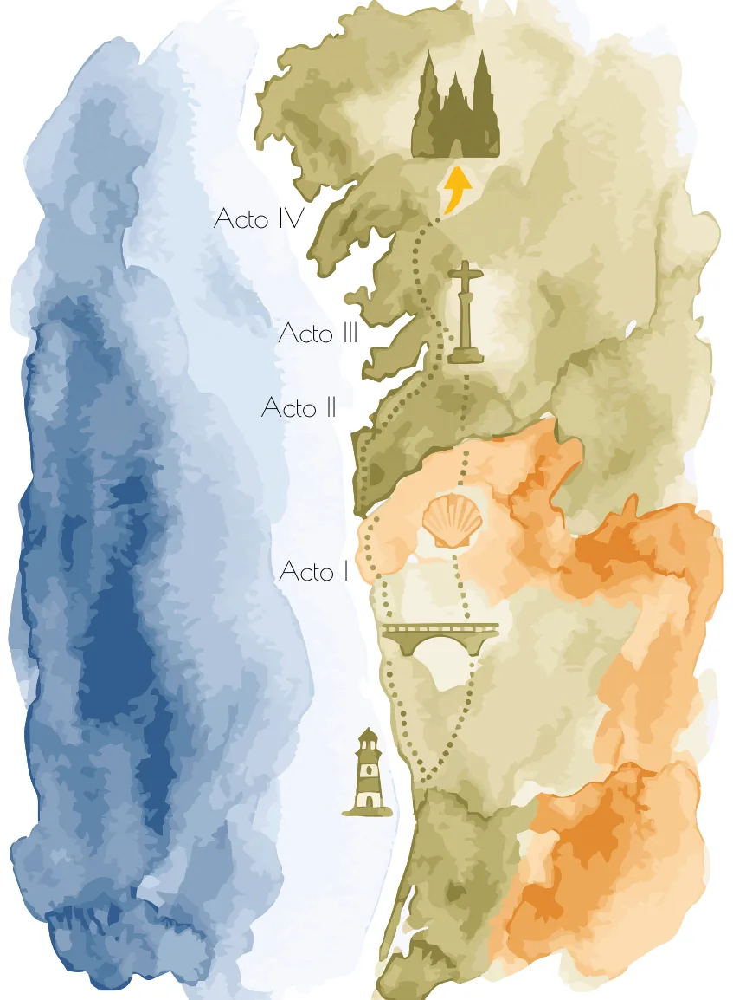
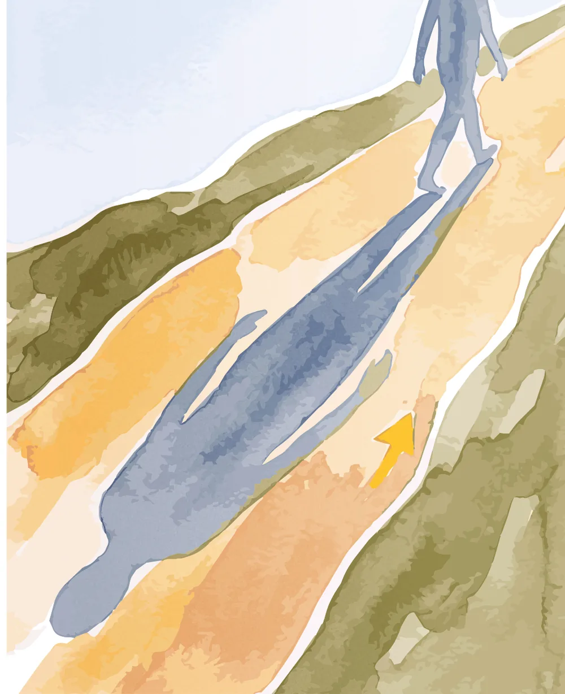

Portuguese Coastal Way · From Porto to Santiago
Behind the Yellow Arrows
Lo que esconden las flechas amarillas
Behind every yellow arrow there is something nobody tells you.
Detrás de cada flecha amarilla hay algo que nadie te cuenta.
A pocket book with 25 places on the Way, painted in watercolour and told in Spanish and English. For reading when you stop to rest your feet.
Going to print soon. Reserve with no commitment and we will tell you the price.


The book
This book
This book is not a practical guide. It gives no distances and no hostels. It collects 25 places along the Portuguese Coastal Way, from Porto to Santiago, and tells one small thing about each: a stone, a legend, a dish.
Some stories are centuries old. Others are about what happens today in a square or a harbour. All of them are a few steps from the Way.
There is a yellow arrow in every illustration. Can you find them all?
Hay una flecha amarilla en cada ilustración. ¿Las encuentras todas?
- 84pages in colour
- 25places, from Porto to Santiago
- 4theme pages on food, weather, nature and architecture
- A6pocket size, 105 × 148 mm
- ES · ENevery text in Spanish and English
- 1hidden arrow in every illustration

The Way, page by page
Four acts, from Porto to Santiago
The book follows the Portuguese Coastal Way in the order you walk it. Tap a place to see its illustration.
Act I
Porto and the Minho
Act II
Galician lands
Act III
The Rías Baixas
Act IV
The final kilometres
Places
One watercolour for each stop
Each place has a double page: the illustration on the left and its story on the right.
Swipe to see more
Inside
What it looks like open
Text in Spanish with English below. Read it in order or open it anywhere: as on the Camino, every stop stands on its own.
The author
«This book began with a simple idea: to tell, between Porto and Santiago, everything a yellow arrow points to but never explains.»
Este libro nació de una idea sencilla: contar, entre Oporto y Santiago, todo lo que una flecha amarilla señala pero nunca explica.
Aldara Álvarez González
Designer and illustrator from Baiona, Galicia. She wrote, illustrated and designed the whole book.
See her work
Reserve
Reserve your copy
The book is about to go to print and the price is not set yet. Reserving does not commit you to anything.
- Leave your name, your email and how many copies you want.
- When it is printed, we will write to you with the price and the payment and shipping options.
- Then you decide whether to confirm.